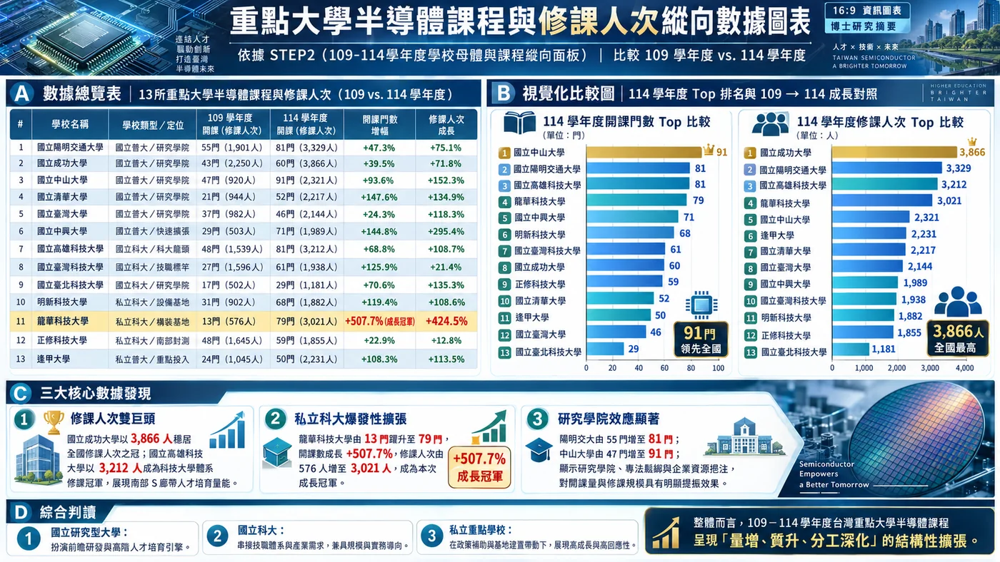
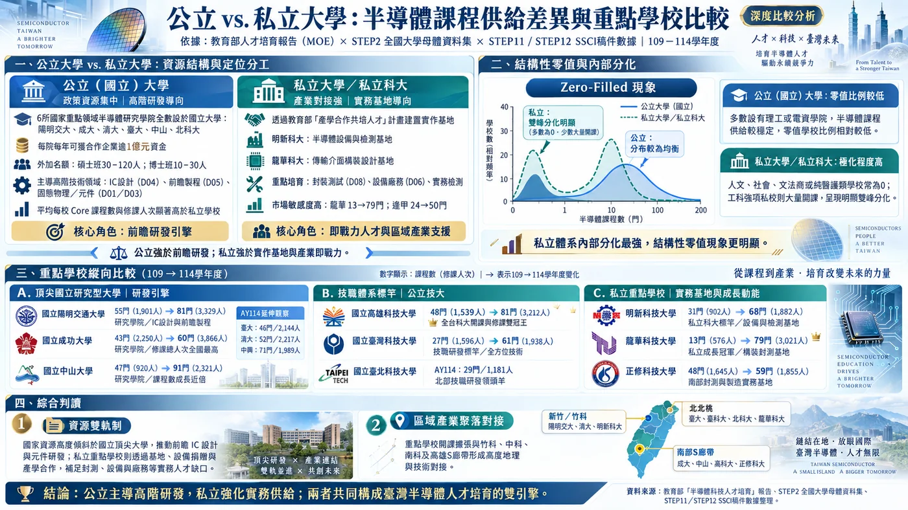
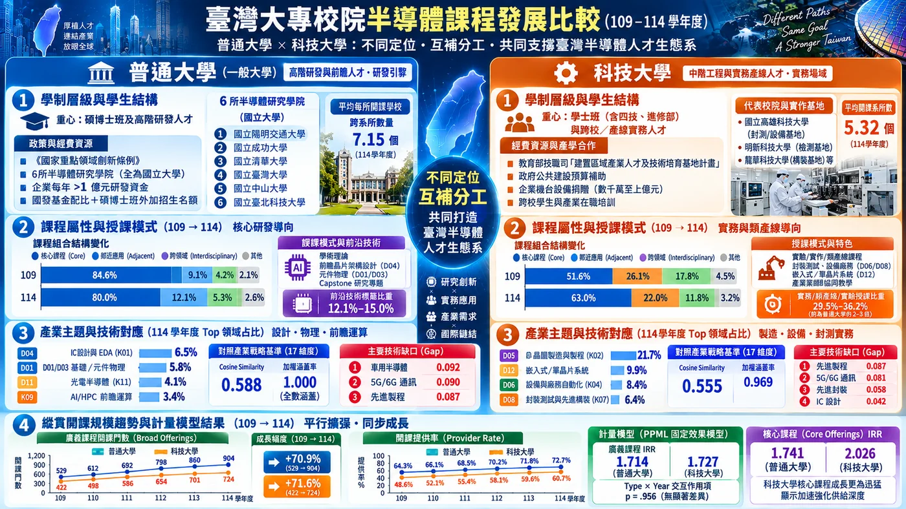
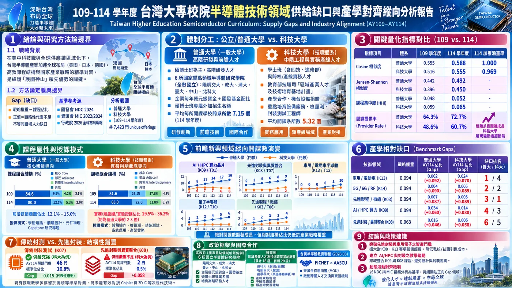
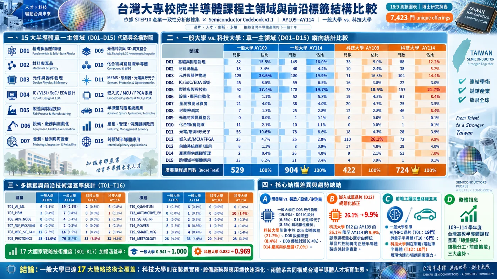

描述統計先回答「發生了什麼」：課程總量、核心課程、提供課程的學校比例、集中度與學校間分布。
| 學年 | 類型 | Active N | Providers | Provider rate | Broad | Core | Mean broad / active |
|---|---|---|---|---|---|---|---|
| AY109 | 一般 | 70 | 45 | 64.3% | 529 | 463 | 7.56 |
| AY109 | 科技 | 70 | 34 | 48.6% | 422 | 283 | 6.03 |
| AY110 | 一般 | 68 | 46 | 67.6% | 567 | 492 | 8.34 |
| AY110 | 科技 | 69 | 39 | 56.5% | 429 | 299 | 6.22 |
| AY111 | 一般 | 68 | 45 | 66.2% | 623 | 548 | 9.16 |
| AY111 | 科技 | 68 | 37 | 54.4% | 474 | 338 | 6.97 |
| AY112 | 一般 | 67 | 46 | 68.7% | 738 | 648 | 11.01 |
| AY112 | 科技 | 66 | 40 | 60.6% | 572 | 424 | 8.67 |
| AY113 | 一般 | 66 | 48 | 72.7% | 823 | 715 | 12.47 |
| AY113 | 科技 | 62 | 39 | 62.9% | 617 | 481 | 9.95 |
| AY114 | 一般 | 66 | 48 | 72.7% | 904 | 803 | 13.70 |
| AY114 | 科技 | 61 | 37 | 60.7% | 724 | 571 | 11.87 |
Gini：.710 → .682，分布略為擴散。
Gini：.762 → .756，集中格局變化較小。




